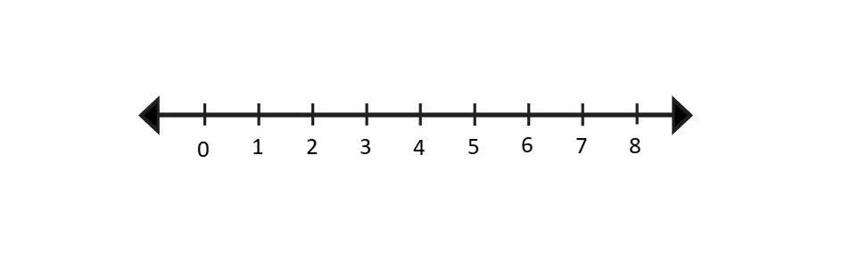
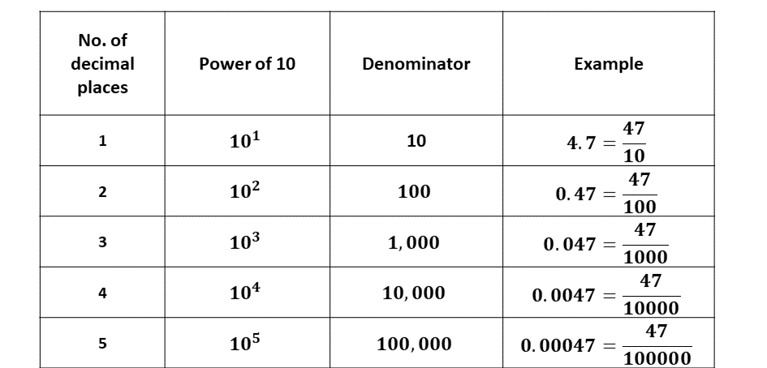
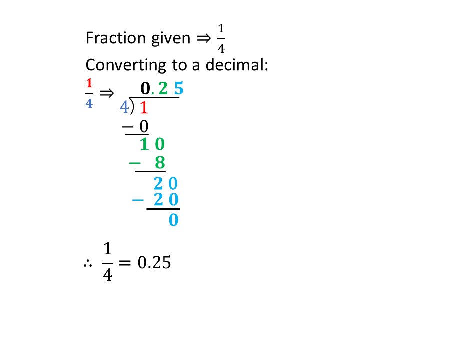
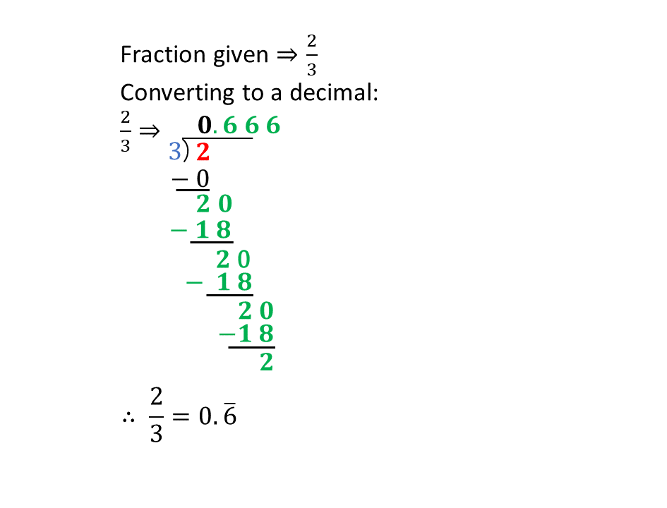
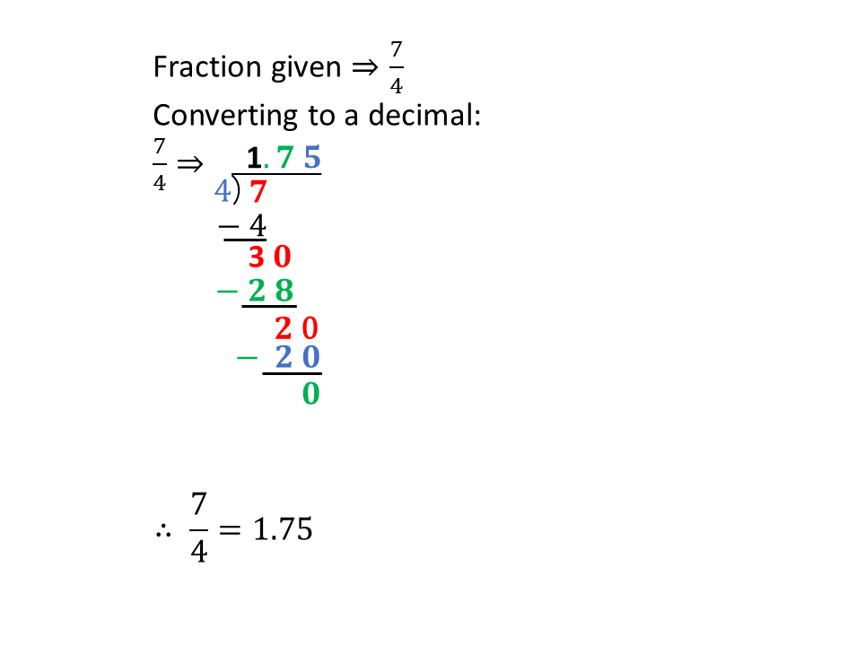
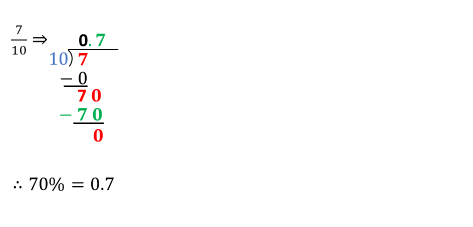

Fractions, Decimals and Percentages
We have just learnt what fractions are and the types of fractions that we have.
Sometimes in Mathematics, we may need to change a fraction to a decimal, or a percentage and vice versa.
Decimals and percentages are one of the ways that we can express fractions.
In our normal fraction terms, when we talk of a whole, we usually mean the number one (1). So one third, \(\frac{1}{3}\), simply means having 1 whole, dividing it into three (3) equal parts and then taking 1 out of the 3 parts.
PERCENTAGES
In terms of percentages, 1 whole is now termed 100\(\%\).
You say,
\(100\% \Rightarrow\) One hundred percent.
Think of it as slicing an orange into 100 equal parts. That means each part or fraction you take, is out of the 100 equal parts of 1 sliced orange.
For instance, if you took 60 slices of the orange, it can be said that you have taken 60 out of the 100 equal slices or parts of the orange. That is the same as saying you have taken 60 percent \((60\%)\) of the sliced orange. It means that;
In Fractions,
60 out of 100 \(\Rightarrow\) \(\frac{60}{100}\)
In Percentages,
\(\frac{60}{100}\) \(\Rightarrow\) \(60\%\)
\(60\% \Rightarrow\) Sixty percent.
Practice Questions
Write the following statements as fractions and as percentages.
1. Seventeen match sticks out of one hundred match sticks.
2. Kofi only took 6 slices of banana out of the 100 slices his mother presented.
3. Maame Araba had eighty-five out of the hundred objective tests correct.
4. Abena's mother gave her Gh₵50.00 out of the Gh₵100.00 she had in her wallet.
5. Manchester United has won 70 trophies, out of the 100 possible trophies for the past 8 years.
Quick Test
Test yourself on what you have learnt so far. Click on the link below when your are ready.
Kindly contact the administrator on 0208711375 for the link to the test.
Converting Between Fractions & Percentages
We just learnt that percentages can also be thought of as fractions whose denominators are 100.
For instance, if the Mathematics teacher says that his pass mark is seventy percent, \(70\%\), then a student who wants to pass the exam must obtain seventy out of 100, \(\frac{70}{100}\), questions or more correct in order to pass the exam.
\(*\) \(\hspace{0.5cm}\)\(70\%\) is the percentage and;
\(*\) \(\hspace{0.5cm}\)\(\frac{70}{100}\) is the fraction.
It is always a good practice to reduce fractions to their lowest term. So let's do that.
Converting Percentages to Fractions
Example 1
Convert \(70\%\) to a fraction in its lowest term:
Solution
Percentage given \(\Rightarrow\) \(70\%\)
\(70\% \ = \frac{70}{100}\)
\(\frac{70}{100} \Rightarrow \frac{7 \times 10}{10 \times 10}\)
\(\hspace{1.12cm} \Rightarrow \frac{7}{10} \times \frac{10}{10}\)
\(\hspace{1.12cm} \Rightarrow \frac{7}{10} \times 1\)
\(\hspace{1.12cm} \Rightarrow \frac{7}{10}\)
\(\Rightarrow 70\% \ = \frac{7}{10}\)
\(\therefore\) \(70\%\) as a fraction in its lowest term is \(\frac{7}{10}\) .
This means that, 70 parts out of 100 equal parts is equivalent to 7 parts out of 10 equal parts.
Example 2
Convert \(40\%\) to a fraction in its lowest term:
Solution
Percentage given \(\Rightarrow\) \(40\%\)
\(40\% \ = \frac{40}{100}\)
\(\frac{40}{100} \Rightarrow \frac{4 \times 10}{10 \times 10}\)
\(\hspace{1.12cm} \Rightarrow \frac{4}{10} \times \frac{10}{10}\)
\(\hspace{1.12cm} \Rightarrow \frac{4}{10} \times 1\)
\(\hspace{1.12cm} \Rightarrow \frac{4}{10}\)
\(\hspace{1.12cm} \Rightarrow \frac{2 \times 2}{5 \times 2}\)
\(\hspace{1.12cm} \Rightarrow \frac{2}{5}\)
\(\Rightarrow 40\% \ = \frac{2}{5}\)
\(\therefore\) \(40\%\) as a fraction in its lowest term is \(\frac{2}{5}\) .
Example 3
Convert \(125\%\) to a fraction in its lowest term:
Solution
Percentage given \(\Rightarrow\) \(125\%\)
\(125\% \ = \frac{125}{100}\)
\(\frac{125}{100} \Rightarrow \frac{5 \times 25}{4 \times 25}\)
\(\hspace{1.12cm} \Rightarrow \frac{5}{4} \times \frac{25}{25}\)
\(\hspace{1.12cm} \Rightarrow \frac{5}{4} \times 1\)
\(\hspace{1.12cm} \Rightarrow \frac{5}{4}\)
\(\hspace{1.12cm} \Rightarrow 1\frac{1}{4}\)
\(\Rightarrow 125\% \ = 1\frac{1}{4}\)
\(\therefore\) \(125\%\) as a fraction in its lowest term is \(1\frac{1}{4}\) .
Converting Fractions to Percentages
To change a fraction to a percentage, you only need to multiply the fraction by one hundred percent \((100\%)\).
In a previous lesson, we learnt that 1 whole in percentages is \(100\%\). This is true as proved below:
\(100\% \ = \frac{100}{100}\)
\(\Rightarrow \frac{100}{100} = 1\)
\(\therefore 100\% \ = 1\)
So when changing a fraction to a percentage, multiplying the fraction by \(100\%\) means we are only multiplying it by a different form of 1 whole, which is \(100\%\).
Let's look at some examples:
Example 1
Express the fraction \(\frac{1}{2}\) as a percentage.
Solution
Fraction given \(\Rightarrow \frac{1}{2}\)
Expressing it as percentage:
\(\Rightarrow \frac{1}{2} \times 100\%\)
\(\Rightarrow \frac{100}{2}\%\)
\(\Rightarrow 50\%\)
\(\Rightarrow \frac{1}{2} = 50\%\)
\(\therefore \frac{1}{2}\) as a percentage is \(50\%\)
Example 2
Kelvin got 8 out of 10 questions correct in an English exam. What was his percentage score?
Solution
8 out of 10 \(\Rightarrow \frac{8}{10}\)
Expressing it as percentage:
\(\Rightarrow \frac{8}{10} \times 100\%\)
\(\Rightarrow \frac{4}{5} \times 100\%\)
\(\Rightarrow \frac{4 \times 100}{5}\%\)
\(\Rightarrow \frac{4 \times 20 \times 5}{5}\%\)
\(\Rightarrow (4 \times 20)\%\)
\(\Rightarrow 80\%\)
\(\Rightarrow \frac{8}{10} = 80\%\)
\(\therefore \frac{8}{10}\) as a percentage is \(80\%\)
Example 3
Express \(\frac{3}{8}\) as a percentage.
Solution
Fraction given \(\Rightarrow \frac{3}{8}\)
Expressing it as percentage:
\(\Rightarrow \frac{3}{8} \times 100\%\)
\(\Rightarrow \frac{3 \times 100}{8}\%\)
\(\Rightarrow \frac{3 \times 25 \times 4}{2 \times 4}\%\)
\(\Rightarrow \frac{3 \times 25}{2}\%\)
\(\Rightarrow \frac{75}{2}\%\)
\(\Rightarrow 37\frac{1}{2}\%\)
\(\Rightarrow \frac{3}{8} = 37\frac{1}{2}\%\)
\(\therefore \frac{3}{8}\) as a percentage is \(37\frac{1}{2}\%\)
Remember:
When you want a part (or a fraction) of any quantity, you will need to multiply the fraction by the given quantity (or value).
Practice Questions
Solve the following, showing all workings.
1. Express 25 as a percentage of 75.
2. In a school, 80 pupils wrote an examination and 64 of them passed. What is the percentage of pupils who passed?
3. What is \(16\%\) of Gh₵500,000.00?
4. Express \(\frac{7}{5}\) as a percentage.
5. Express 30 cm as a percentage of 2 m.
Quick Test
Test yourself on what you have learnt so far. Click on the link below when your are ready.
Kindly contact the administrator on 0208711375 for the link to the test.
Converting Between Fractions & Decimals
Like the percentage, a decimal is also another form of expressing fractions. A decimal can be thought of as a part of an interval.
Consider the number line above, the distance between any two given numbers on the number line is said to be their interval.
Example:
1. The interval between 1 and 2
\(\hspace{0.5cm} \Rightarrow 2 - 1 = 1\)
2. The interval between 17 and 8.
\(\hspace{0.5cm} \Rightarrow 17 - 8 = 9\)
3. The interval between 7 and 8.
\(\hspace{0.5cm} \Rightarrow |7 - 8| = 1\)
These intervals can then be divided into various equal parts.
CONVERTING A DECIMAL TO A FRACTION
One out of 10 parts \((\frac{1}{10})\)
When an interval of 1 is divided into 10 equal parts, each part is called a decimal and has a fraction of \(\frac{1}{10}\) (that is, 1 part out of the 10 equal parts).
The word deci \(\Rightarrow\) out of 10 (or divided by 10).
\(\frac{1}{10}\) in decimals is written as \(0.1\)
This implies that, any decimal that has only 1 decimal place can be written in the form below:
1. numerator \(\Rightarrow\) significant figure without the decimal point
2. denominator \(\Rightarrow\) 10
Consider the example below.
Example
Express 0.2 as a fraction:
Steps
In expressing 0.2 as a fraction:
\(*\) Our numerator will be the significant figures without the decimal point \(\Rightarrow\) 2
\(*\) 0.2 has only 1 decimal place, so denominator \(\Rightarrow\) 10
\(\Rightarrow 0.2 = \frac{2}{10}\)
\(\therefore 0.2 = \frac{1}{5}\)
Remember that it is always a good practice to express fractions in their simplest terms.
One out of 100 parts \((\frac{1}{100})\)
When an interval of 1 is divided into 100 equal parts, each part has a fraction of \(\frac{1}{100}\) (that is, 1 part out of the 100 equal parts).
\(\frac{1}{100}\) in decimals is written as \(0.01\)
This implies that, any decimal that has only 2 decimal places can be written in the form below:
1. numerator \(\Rightarrow\) significant figure without the decimal point
2. denominator \(\Rightarrow\) 100
Consider the example below.
Example
Express 0.20 as a fraction.
Steps
In expressing 0.20 as a fraction:
\(*\) Our numerator will be the significant figures without the decimal point \(\Rightarrow\) 20
\(*\) 0.20 has 2 decimal places, so the denominator will be \(\Rightarrow\) 100
\(\Rightarrow 0.20 = \frac{20}{100}\)
\(\therefore 0.20 = \frac{1}{5}\)
Remember that it is always a good practice to express fractions in their simplest terms.
When expressing decimals as fractions, the denominator will be a power (or exponent) of 10 that has zeros (0) equal to the number of decimal places in the given number.
Consider the table below:
Hence, when converting a decimal to a fraction, check the number of decimal places of the decimal, that will be the number of zeros the denominator, which will be a power of 10, will have.
Changing a Fraction to a decimal
Fractions can be converted into decimals by dividing the numerator by the denominator.
We can achieve this by using the long division method.
To convert \(\frac{a}{b}\) to a decimal;
1. Divide \(a\) (numerator) by \(b\) (denominator).
2. If the division does not terminate, continue until you either identify a repeating pattern or reach the desired number of decimal places.
NB: At the JHS level, always try to leave your decimals to 4 decimal places.
Consider the examples below:
Example 1
Convert \(\frac{1}{4}\) into a decimal
Solution
\(0.25\) is an example of a terminating decimal (decimals who have a definite number of decimal places.)
Example 2
Convert \(\frac{2}{3}\) into a decimal
Solution
\(0.\overline{6}\) is an example of a repeating decimal.
Example 3
Convert \(\frac{7}{4}\) into a decimal
Solution
Changing an improper fraction into decimal follows the same process as before.
Practice Questions
Convert the following fractions into decimals leaving your answer to four decimal places:
1. \(\frac{17}{6}\)
2. \(\frac{45}{7}\)
3. \(\frac{18}{5}\)
4. \(\frac{37}{6}\)
5. \(\frac{14}{3}\)
Quick Test
Test yourself on what you have learnt so far. Click on the link below when your are ready.
Kindly contact the administrator on 0208711375 for the link to the test.
Converting Between Decimals & Percentages
To convert between a decimal and a percentage, you will need to first convert the given decimal or percentage to a fraction between using the steps outlined to change it into your desired form.
Steps:
1. Convert the fraction or decimal into a fraction in its simplest form.
2. Convert the resulting fraction into your desired form (decimal or percentage.)
Example 1
Convert \(70\%\) into a decimal.
Solution
Fraction given \(\Rightarrow\) \(70\%\)
\(70\%\) into a fraction \(\Rightarrow \frac{70}{100}\)
\(\hspace{0.5cm} \Rightarrow\) \(\frac{7 \times 10}{10 \times 10}\)
\(\hspace{0.5cm} \Rightarrow\) \(\frac{7}{10} \times \frac{10}{10}\)
\(\hspace{0.5cm} \Rightarrow\) \(\frac{7}{10}\)
Converting \(\frac{7}{10}\) to a decimal:
Example 2
Convert \(0.7\) into a percentage.
Solution
\(0.7\) has 1 decimal place.
\(0.7 \Rightarrow \frac{7}{10}\)
Changing the fraction to a percentage:
\(\Rightarrow \frac{7}{10} \times 100\%\)
\(\Rightarrow \frac{7 \times 100}{10}\%\)
\(\Rightarrow \frac{7 \times 10 \times 10}{10}\%\)
\(\Rightarrow (7 \times 10)\%\)
\(\Rightarrow 70\%\)
\(\therefore 0.7\) in percentage is \(70\%\).
Practice Questions
Solve the following, showing all workings.
1. Express \(85\%\) as a decimal.
2. Express \(0.435\) as a percentage.
3. Express \(2\frac{1}{2}\%\) as a decimal.
4. Express \(16\%\) as a decimal.
5. Express 23.58 as a percentage.
Quick Test
Test yourself on what you have learnt so far. Click on the link below when your are ready.
Kindly contact the administrator on 0208711375 for the link to the test.
To advertise on our website kindly call on 0208711375 or 0249969740.